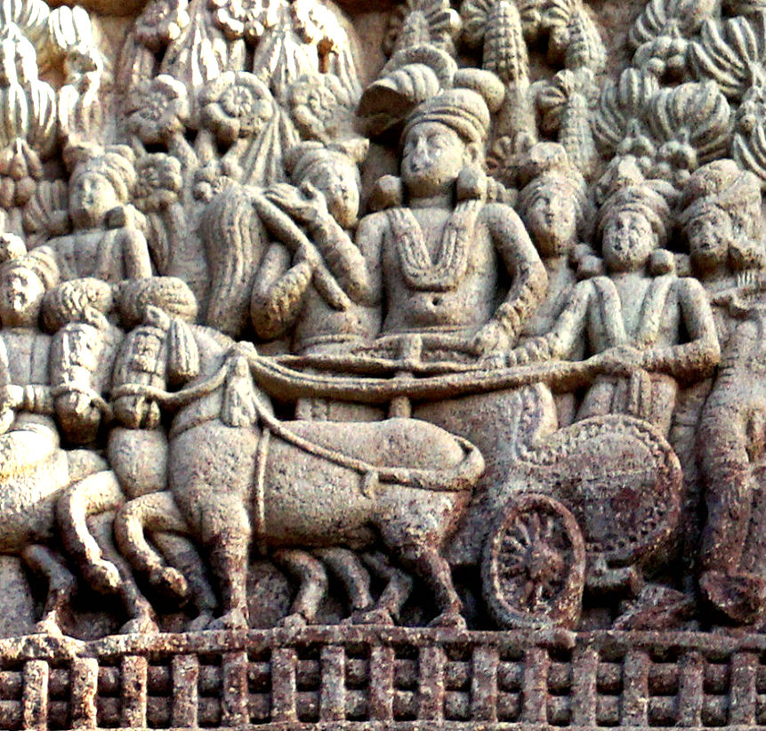

Kerala
Kerala (/ˈkɛrələ/) is a state on the southwestern, Malabar Coast of India. It was formed on 1 November 1956 following the States Reorganisation Act by combining Malayalam-speaking regions. Spread over 38,863 km2 (15,005 sq mi), it is bordered by Karnataka to the north and northeast, Tamil Nadu to the east and south, and the Lakshadweep Sea to the west. With 33,387,677 inhabitants as per the 2011 Census, Kerala is the thirteenth-largest Indian state by population. It is divided into 14 districts with the capital being Thiruvananthapuram. Malayalam is the most widely spoken language and is also the official language of the state.
The Chera Dynasty was the first prominent kingdom based in Kerala. The Ay Kingdom in the deep south and the Ezhimala Kingdom in the north formed the other kingdoms in the early years of the Common Era (CE or AD). The region had been a prominent spice exporter since 3000 BCE. The region's prominence in trade was noted in the works of Pliny as well as the Perplus around 100 CE. In the 15th century, the spice trade attracted Portuguese traders to Kerala, and paved the way for European colonisation of India.
At the time of Indian independence movement in the early 20th century, there were two major princely states in Kerala-Travancore State and the Kingdom of Cochin. They united to form the state of Thiru-Kochi in 1949. The Malabar region, in the northern part of Kerala had been a part of the Madras province of British India, which later became a part of the Madras State post-independence. After the States Reorganisation Act, 1956, the modern-day state of Kerala was formed by merging the Malabar district of Madras State (excluding Gudalur taluk of Nilgiris district, Topslip, the Attappadi Forest east of Anakatti), the state of Thiru-Kochi (excluding four southern taluks of Kanyakumari district, Shenkottai and Tenkasi taluks), and the taluk of Kasaragod (now Kasaragod District) in South Kanara (Tulunad) which was a part of Madras State.
History
The history of Kerala, India, dates back many millennia. Stone Age carvings in the Edakkal Caves feature pictorial writings believed to date to at least the Neolithic era around 5,000 BC, indicating the presence of a prehistoric civilisation or settlement in this region.[1] From as early as 3000 BC, Chera nadu, currently known as Kerala had established itself as a major spice trade centre. Keralam, the then Chera nadu had direct contact across the Arabian Sea with all the major Mediterranean and Red Sea ports as well those of the Far East. The spice trade between Kerala and much of the world was one of the main drivers of the world economy. For much of history, ports in Kerala were the busiest (Muziris) among all trade and travel routes in the history of the world.
The word Kerala is first recorded (as Keralaputra) in a 3rd-century BC rock inscription (Rock Edict 2) left by the Maurya emperor Ashoka (274–237 BC).[2] The Land of Keralaputra was one of the five independent kingdoms in southern India during Ashoka's time, the others being Chola, Pandya, Tamiraparani and Satiyaputra.[3]A 3rd century CE, Brahmi inscription, found on Edakal cave, Ambukuthi hill, contained the word ‘Chera' (‘kadummipudha chera'), the earliest inscriptional evidence of the dynasty Chera.[4] The Cheras collapsed after repeated attacks from the neighboring Chola Empire and Rashtrakuta Empire. In the 8th century, Adi Shankara was born at Kalady in central Kerala. He travelled extensively across the Indian subcontinent establishing institutions of Advaita Vedanta philosophy.

Contact with Europeans after the arrival of Vasco Da Gama in 1498 gave rise to struggles between colonial and native interests. The state of Keralam was created in 1956 from the former state of Travancore-Cochin, the Malabar district of Madras State, and the Kasaragod taluk of Dakshina Kannada.[5] Kerala
Geography
The state is wedged between the Lakshadweep Sea and the Western Ghats. Lying between northern latitudes 8°18' and 12°48' and eastern longitudes 74°52' and 77°22',[107] Kerala experiences the humid equatorial tropic climate. The state has a coast of 590 km (370 mi)[108] and the width of the state varies between 11 and 121 kilometres (7 and 75 mi).[109] Geographically, Kerala can be divided into three climatically distinct regions: the eastern highlands; rugged and cool mountainous terrain, the central mid-lands; rolling hills, and the western lowlands; coastal plains.[110] Pre-Cambrian and Pleistocene geological formations compose the bulk of Kerala's terrain.[111][112].
A catastrophic flood in Kerala in 1341 CE drastically modified its terrain and consequently affected its history; it also created a natural harbour for spice transport.[113] The eastern region of Kerala consists of high mountains, gorges and deep-cut valleys immediately west of the Western Ghats' rain shadow.[110] 41 of Kerala's west-flowing rivers,[114] and 3 of its east-flowing ones originate in this region.[115][116] The Western Ghats form a wall of mountains interrupted only near Palakkad; hence also known Palghat, where the Palakkad Gap breaks.[117] The Western Ghats rise on average to 1,500 metres (4,900 feet) above sea level,[118] while the highest peaks reach around 2,500 metres (8,200 feet).[119] Anamudi in the Idukki district is the highest peak in south India, is at an elevation of 2,695 m (8,842 ft).
The state is wedged between the Lakshadweep Sea and the Western Ghats. Lying between northern latitudes 8°18' and 12°48' and eastern longitudes 74°52' and 77°22',[107] Kerala experiences the humid equatorial tropic climate. The state has a coast of 590 km (370 mi)[108] and the width of the state varies between 11 and 121 kilometres (7 and 75 mi).[109] Geographically, Kerala can be divided into three climatically distinct regions: the eastern highlands; rugged and cool mountainous terrain, the central mid-lands; rolling hills, and the western lowlands; coastal plains.[110] Pre-Cambrian and Pleistocene geological formations compose the bulk of Kerala's terrain.[111][112] A catastrophic flood in Kerala in 1341 CE drastically modified its terrain and consequently affected its history; it also created a natural harbour for spice transport.[113] The eastern region of Kerala consists of high mountains, gorges and deep-cut valleys immediately west of the Western Ghats' rain shadow.[110] 41 of Kerala's west-flowing rivers,[114] and 3 of its east-flowing ones originate in this region.[115][116] The Western Ghats form a wall of mountains interrupted only near Palakkad; hence also known Palghat, where the Palakkad Gap breaks.[117] The Western Ghats rise on average to 1,500 metres (4,900 feet) above sea level,[118] while the highest peaks reach around 2,500 metres (8,200 feet).[119] Anamudi in the Idukki district is the highest peak in south India, is at an elevation of 2,695 m (8,842 ft).

The state is wedged between the Lakshadweep Sea and the Western Ghats. Lying between northern latitudes 8°18' and 12°48' and eastern longitudes 74°52' and 77°22',[107] Kerala experiences the humid equatorial tropic climate. The state has a coast of 590 km (370 mi)[108] and the width of the state varies between 11 and 121 kilometres (7 and 75 mi).[109] Geographically, Kerala can be divided into three climatically distinct regions: the eastern highlands; rugged and cool mountainous terrain, the central mid-lands; rolling hills, and the western lowlands; coastal plains.[110] Pre-Cambrian and Pleistocene geological formations compose the bulk of Kerala's terrain.[111][112] A catastrophic flood in Kerala in 1341 CE drastically modified its terrain and consequently affected its history; it also created a natural harbour for spice transport.[113] The eastern region of Kerala consists of high mountains, gorges and deep-cut valleys immediately west of the Western Ghats' rain shadow.[110] 41 of Kerala's west-flowing rivers,[114] and 3 of its east-flowing ones originate in this region.[115][116] The Western Ghats form a wall of mountains interrupted only near Palakkad; hence also known Palghat, where the Palakkad Gap breaks.[117] The Western Ghats rise on average to 1,500 metres (4,900 feet) above sea level,[118] while the highest peaks reach around 2,500 metres (8,200 feet).[119] Anamudi in the Idukki district is the highest peak in south India, is at an elevation of 2,695 m (8,842 ft).